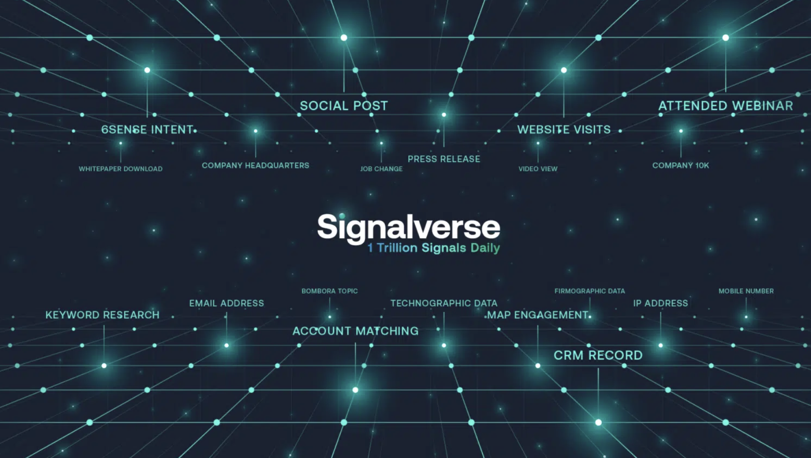
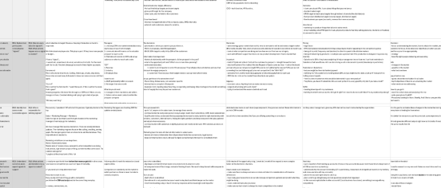
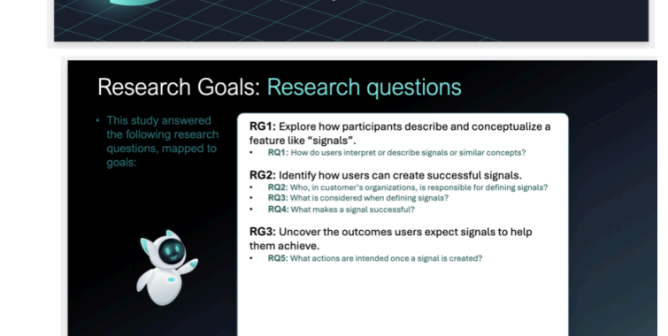

Why this mattered
Signals were meant to help revenue teams understand when to engage and why it matters. Without clarity, trust, and context, the feature risked feeling like a stream of generic alerts instead of meaningful decision support.
Project Overview
At 6sense, I led foundational research to understand how revenue teams define signals, what makes them trustworthy, and what they expect to happen after a signal appears. The work clarified that signals are not just notifications. For users, they are prompts for attention, validation, and next-step decisions that need to feel timely, explainable, and worth acting on.

Understand how people conceptualize signals, how successful signals are created, and what outcomes teams expect signals to drive.
The research showed a clear mental model for how users process signals before they act.
Participants consistently wanted signal ownership to live with the people nearest to day-to-day GTM decisions.
Signals were meant to help revenue teams understand when to engage and why it matters. Without clarity, trust, and context, the feature risked feeling like a stream of generic alerts instead of meaningful decision support.
This was a foundational study focused on language, ownership, trust, and intended action. I used qualitative inquiry and synthesis to understand not just what users wanted signals to do, but how they expected the feature to fit into the way they already worked.
The Process
The work moved from framing the concept, to understanding how people talked about signals, to clarifying what the product needed to support if the feature was going to feel truly useful.
These artifacts show how the work moved from research framing, to note organization, to a clearer synthesis of the signal experience.


The strongest pattern was that users did not see signals as passive information. They saw them as directional prompts that should help them triage, validate, and move.
Participants interpreted the word signal as a cue to notice something important. The feature needed to feel more like a meaningful prompt than a generic notification.
Users wanted the full picture before acting. That meant seeing why the signal fired, what data informed it, and whether the source was credible enough to trust.
Participants believed the people nearest to accounts, campaigns, and active GTM priorities should define signals first, especially in less centralized environments.
Signals were more useful when tied to active projects, territories, business goals, and trend context. Without that frame, it was harder to know what mattered now.
After validation, teams wanted to record the event in systems like CRM, coordinate with others when needed, and move quickly into outreach or follow-up when the signal met the right threshold.
Product Direction
This research gave the team a sharper product direction for signal configuration by grounding the feature in user language, trust needs, and action-oriented workflows rather than abstract alert logic.
Signals should feel distinct enough to earn attention rather than blend into general product noise.
Users need clear reasons, visible sources, and supporting context before they trust the trigger.
Configuration should work for teams where ownership is distributed today and becomes more centralized over time.
The strongest signals are rooted in business metrics, account priorities, and meaningful follow-up actions.
This project was a strong reminder that decision-support features live or die on trust. Users were open to a concept like signals, but only if the system could help them understand what happened, why it happened, and whether it deserved immediate action.
I also found the ownership question especially important. The research surfaced that signal configuration is not just a settings problem. It is an organizational workflow problem, because the right person to define a signal often depends on how closely they sit to the goals and risks it represents.
Most of all, the work reinforced that people do not want more alerts. They want clearer cues, stronger context, and better judgment support built into the product.